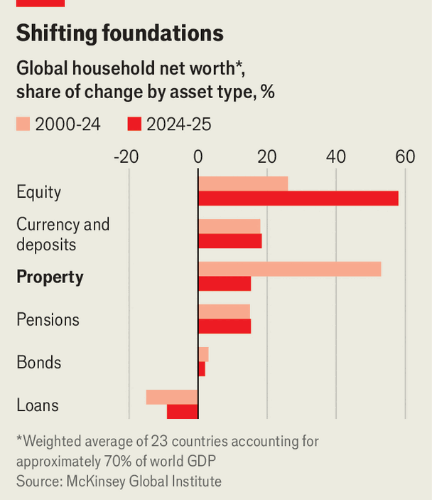

Why shares are the new bricks and mortar
Household wealth is flowing from property to stocks
Oct 8th 2026
Freshers’ Week, the initiation into British university life, is often a blur of cheap pints and sticky dance floors. For German-born Sophie Blank, it was an introduction to another British rite of passage: getting on the property ladder. Her new classmates, barely out of school, were already plotting their paths to homeownership, she says. Now 33, working in AI and content creation, and posting about money matters on social media, Ms Blank says she is “happily renting” in Notting Hill, in west London. She is putting her savings into stocks instead. The property ladder, she declares, can wait.
In Germany people tend to rent their homes. But those in the Anglosphere buy if they can afford to—and have long built the bulk of their wealth that way, encouraged by the post-war proliferation of policies to promote home-buying. In America and Canada, homeowners are wealthier than renters, a gap that has widened over time. In Britain, estimates the Yorkshire Building Society, a lender, by retirement age homeowners are on average nearly £800,000 ($1.1m) richer than renters, with property accounting for almost half the gap. In Australia around one in seven taxpayers owns an investment property.
Now it seems less clear that property is the path to wealth, especially for the young. Although housing markets in many countries have softened lately, they are still close to all-time highs after adjusting for inflation, according to The Economist’s latest estimates. For many, getting on the housing ladder is too costly to contemplate: in Ireland three-fifths of 18- to 34-year-olds live with their parents. But property is also looking less attractive as an investment. As higher interest rates cool house prices, households are generating more of their wealth from stocks than from property, reversing a two-decade trend. Of the $40trn added to global household wealth in 2025, 57% came from stocks and 15% from property—a marked contrast with the previous 25 years, in which property’s share averaged 52% and that of equities 26%, according to the McKinsey Global Institute (MGI), a think-tank within a consultancy (see chart).

America sits at the extreme end of the realignment. In July stocks overtook property as a share of household wealth for the first time since the second world war, calculates Goldman Sachs, a bank. The surge in equity investing is especially pronounced among young people priced out of property. The share of 25-year-olds who had put money into investment accounts rose sixfold between 2015 and 2024, finds JPMorgan Chase, a trend the bank suggests may be linked to high housing costs.
Fluctuating asset values are largely responsible. Moody’s Analytics, a data firm, projects that America’s average annual home-price appreciation will ease to 2.1% between 2026 and 2035, from roughly 5% in the past decade. Meanwhile in England, the average home is now worth less in real terms than it was two decades ago. By contrast, stocks are booming. The ratio of the market value of corporate equity to the net book value of assets has reached an all-time high—surpassing dotcom-era peaks by 50%, says Jan Mischke of MGI.
Policy has also shifted. Governments are dismantling tax breaks and subsidies that have helped to inflate property prices. In May Britain introduced new protections for renters, shielding them from bidding wars, excessive rent rises and no-fault evictions. In 2023 Canada banned foreigners from buying property, a restriction due to expire in 2027. Speculative investment is in retreat as a result. British buy-to-let landlords are selling at record rates and sales of condos in Toronto have crashed. In America, the number of homes being flipped has dropped and profit margins have sunk.
A pivot away from property has benefits: reining in the housing boom reduces the risk of a 2008-style financial crash. (That said, stock markets can also crash, and rather more quickly when they do.) But it mirrors a shift in mindset, too. Young people are increasingly disillusioned with the idea that bricks and mortar guarantee financial security, judging by responses to Ms Blank’s social-media posts. Though homeownership has “worked amazingly for older generations”, today’s young adults “can only dream” of achieving the same level of property wealth, she says. ■